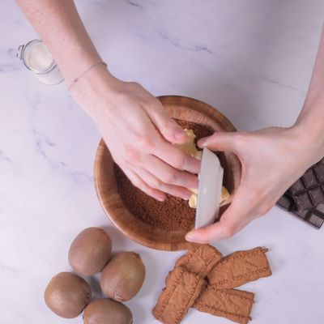
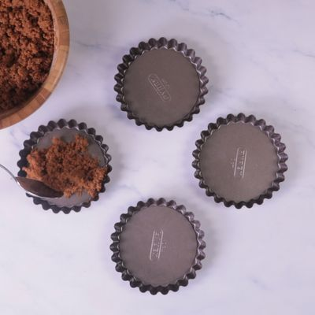
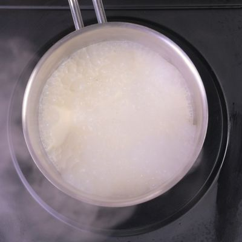
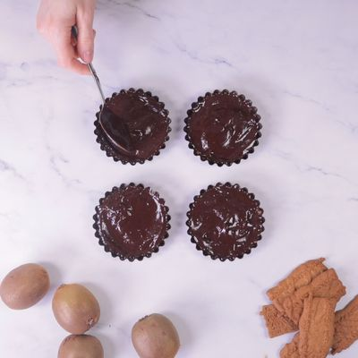
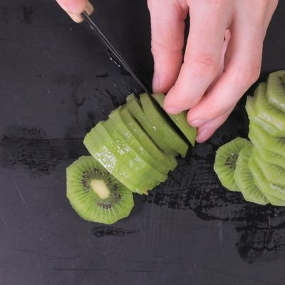
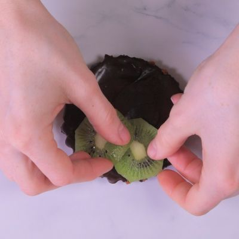

Préparation de la base biscuitée. Emietter les speculoos et les mélanger avec le beurre mou coupé en dés.
Tasser la préparation dans des moules à tartelettes ou des emportes-pièces.
Réserver au moins 30 minutes au réfrigérateur. Préparation de la garniture : Mettre la crème liquide à bouillir dans une casserole.
Casser le chocolat en morceaux dans un saladier et verser la crème bouillante dessus pour le faire fondre. Mélanger jusqu'à ce que le chocolat est complètement fondu.
Verser la sauce chocolat sur les fonds de tartelettes.
Réserver 30 minutes au réfrigérateur. Peler les kiwis et les couper en fines rondelles.
Déposer les tranches de kiwis sur les tartelettes avant de servir.
